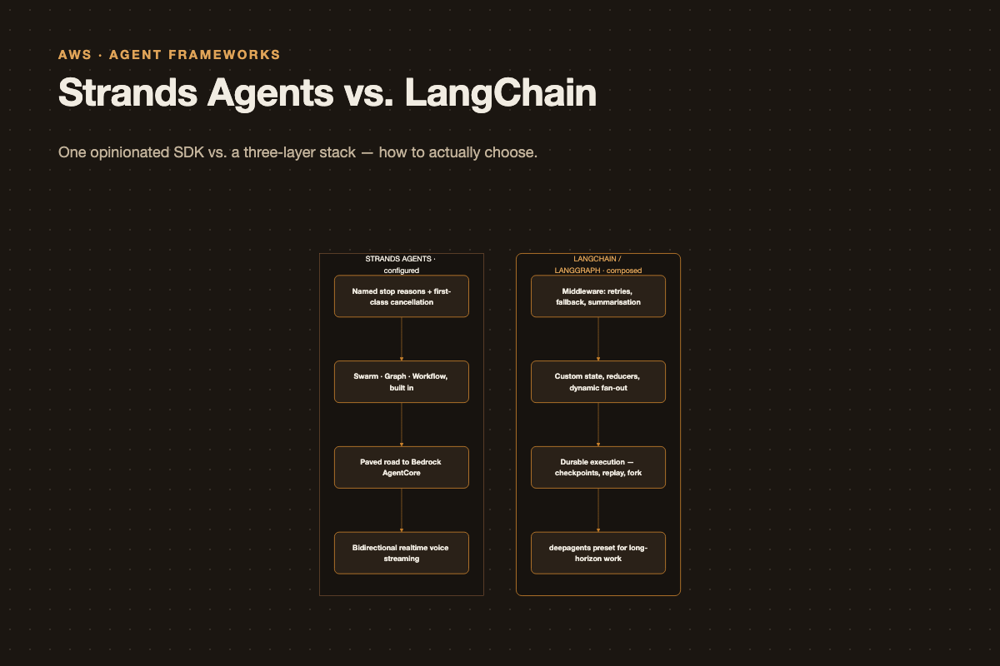

Strands Agents vs. LangChain: How to Actually Choose
Strands Agents vs. LangChain: How to Actually Choose

Every few months someone on my team asks the same question: we’re building an agent, should we use Strands or LangChain? And every time, the honest answer starts with “those aren’t the same kind of thing.”
So this post is the version of that answer I wish I could just link to. It’s organised around the decisions you actually have to make — how you bound the loop, how you compose multiple agents, what happens when a run dies halfway through — rather than a feature checklist. At the end there’s a heuristic you can apply in about ninety seconds.
First: what are we even comparing?
Strands Agents is a single SDK from AWS, in Python and TypeScript. You get an Agent, and you get first-class multi-agent orchestrators — Swarm, Graph, Workflow — plus A2A for talking to remote agents. One install, one mental model.
“LangChain” in 2026 is three layers stacked on top of each other, and conflating them is why these comparisons go sideways:
- LangGraph is the runtime. A Pregel-inspired graph engine: state, nodes, edges, super-steps, checkpoints. This is the actual engine.
create_agentis the agent harness built on that runtime. Model + tools + prompt + middleware, compiled down to a LangGraph graph.- deepagents is the batteries-included preset on top of
create_agent: planning tool, virtual filesystem, subagents, memory, prompt caching.
So “Strands vs LangChain” is really “one opinionated SDK vs a three-layer stack where you choose your altitude.” That framing already tells you something: if you want to be handed a working multi-agent topology, Strands is closer to that. If you want to build an unusual control flow and have the runtime not fight you, LangGraph is closer to that.
Everything below is downstream of that split.
Axis 1: the agent loop and how you bound it
Both run the same loop — call the model, execute any tool calls, feed results back, repeat until the model stops asking for tools. Nobody is innovating on the loop itself. The difference is in the controls around it.
Strands is unusually explicit about termination. You pass a limits object and you get back a named stop reason:
from strands import Agent
agent = Agent(
name="researcher",
system_prompt="You research topics thoroughly.",
tools=[search, fetch_page],
)
result = agent("Summarise the state of agent frameworks", limits={
"turns": 25,
"total_tokens": 200_000,
"output_tokens": 8_000,
})
if result.stop_reason == "limit_turns":
... # budget exhausted, history is still valid — re-invoke with moreThe stop reason vocabulary is the part I like: end_turn, tool_use, limit_turns, limit_total_tokens, limit_output_tokens, max_tokens, stop_sequence, content_filtered, guardrail_intervention, cancelled. When a run ends, you know precisely why, and hitting a limit is treated as graceful budget exhaustion rather than a crash — the conversation history stays valid and you can resume with a bigger budget.
Two more Strands details worth knowing. Cancellation is first-class and genuinely thought through: agent.cancel() is thread-safe and idempotent, you can pass a threading.Event (Python) or an AbortSignal (TypeScript) from outside, and there are four checkpoints where the loop notices — during model streaming, before tool execution, during MCP tool execution, and after. In-tool cancellation is cooperative, so a tool that ignores tool_context.cancel_signal runs to completion. And concurrency is guarded by default: overlapping invocations on one agent instance raise a ConcurrencyException, because an invocation mutates conversation history. You can opt into idempotency tokens or an explicitly unsafe reentrant mode, but you have to opt in.
LangChain bounds the loop with middleware instead, which is less about naming the exit and more about composing behaviour:
from langchain.agents import create_agent
from langchain.agents.middleware import (
ModelCallLimitMiddleware,
ToolRetryMiddleware,
ModelFallbackMiddleware,
SummarizationMiddleware,
)
agent = create_agent(
model="anthropic:claude-sonnet-4-6",
tools=[search, fetch_page],
system_prompt="You research topics thoroughly.",
middleware=[
ToolRetryMiddleware(max_retries=3, backoff_factor=2.0, jitter=True),
ModelFallbackMiddleware("openai:gpt-5.5", "google:gemini-3.6-flash"),
SummarizationMiddleware(trigger=("fraction", 0.7), keep=("messages", 20)),
ModelCallLimitMiddleware(thread_limit=40, run_limit=25, exit_behavior="end"),
],
)Middleware hooks into six points: before_agent, before_model, after_model, after_agent, wrap_model_call, wrap_tool_call. And the built-in list is the thing that actually saves you time — roughly nineteen of them covering tool errors, tool retries, model retries, model fallback, summarisation, human-in-the-loop, model and tool call limits, PII detection, todo lists, LLM-based tool selection, context editing, filesystem access, and tool emulation for tests.
That list is real leverage. Retry with jitter, provider fallback, and context summarisation are three things every production agent eventually needs, and having them as a one-line import beats writing them again.
Underneath, LangGraph has a recursion_limit (default 1000 super-steps) as the ultimate backstop. It’s a blunter instrument than Strands’ turn budget — it counts graph steps, not model turns — but it does stop runaway loops.
The takeaway on this axis: Strands gives you better answers to “why did this stop?”; LangChain gives you better answers to “how do I change what happens on the way?” Both matter, but they matter to different people. If you’re operating agents and debugging production incidents, named stop reasons are worth a lot. If you’re building the agent and need retries, fallbacks, and context management, middleware is worth more.
Axis 2: orchestration — configured vs. composed
This is the axis that should drive your decision.
Strands hands you the topologies
Three built-in orchestrators, each with its own semantics, plus agents-as-tools for hierarchical delegation.
Swarm is autonomous handoff between peers. Any agent can decide to pass the task to another:
from strands.multiagent import Swarm
swarm = Swarm(
[researcher, coder, reviewer, architect],
entry_point=researcher,
max_handoffs=20,
max_iterations=20,
execution_timeout=900.0,
node_timeout=300.0,
repetitive_handoff_detection_window=8,
repetitive_handoff_min_unique_agents=3,
)
result = swarm("Design and implement a REST API for a todo app")
print(result.status, [n.node_id for n in result.node_history])Every agent gets a handoff_to_agent(agent_name=..., message=..., context={...}) tool injected, and a mutable SharedContext that all of them read and write. The receiving agent gets a built context string: the handoff message, the original request, the chain of agents so far, shared knowledge, and descriptions of the other agents available.
Look at those constructor defaults again, because they’re the point. Step limits, a total execution timeout, a per-node timeout, and ping-pong detection — two agents bouncing a task back and forth is the classic swarm failure mode and Strands ships a detector for it. That’s roughly a day of work you don’t do.
Graph is explicit topology with conditional edges, and it supports cycles:
from strands.multiagent import GraphBuilder
from strands.multiagent.base import Status
from strands.multiagent.graph import GraphState
def analysis_failed(state: GraphState) -> bool:
res = state.results.get("analysis")
return res is not None and res.status != Status.COMPLETED
builder = GraphBuilder()
builder.add_node(researcher, "research")
builder.add_node(analyst, "analysis")
builder.add_node(critic, "critique")
builder.add_node(writer, "report")
builder.add_edge("research", "analysis")
builder.add_edge("analysis", "critique")
builder.add_edge("critique", "analysis", condition=analysis_failed) # feedback loop
builder.add_edge("analysis", "report")
builder.set_entry_point("research")
builder.set_max_node_executions(30)
builder.set_execution_timeout(600)
graph = builder.build()
result = graph("Assess the EU AI Act's impact on model providers")Nodes can be other orchestrators — builder.add_node(research_swarm, "research_team") nests a whole Swarm as one node — or remote agents over A2A:
from strands.agent.a2a_agent import A2AAgent
ml_analyzer = A2AAgent(endpoint="http://ml-service:9000", name="ml_analyzer", timeout=600)
builder.add_node(ml_analyzer, "ml")Workflow is the deterministic DAG: no cycles, parallel execution of independent tasks, outputs auto-passed to dependents, each task receiving a curated summary of its dependencies rather than the full history. Use it when the plan is known in advance.
LangChain hands you a runtime
The current LangChain docs no longer ship supervisor or swarm prebuilts. Multi-agent is documented as five patterns — subagents, handoffs, skills, router, custom workflow — and you build the one you need on StateGraph:
from typing import Annotated, TypedDict
from operator import add
from langgraph.graph import StateGraph, START, END
from langgraph.checkpoint.memory import InMemorySaver
class State(TypedDict):
messages: Annotated[list, add]
findings: Annotated[list[str], add]
attempts: int
def route(state: State) -> str:
if state["attempts"] >= 3:
return "report"
return "analysis" if not state["findings"] else "report"
builder = StateGraph(State)
builder.add_node("research", research_node)
builder.add_node("analysis", analysis_node)
builder.add_node("report", report_node)
builder.add_edge(START, "research")
builder.add_edge("research", "analysis")
builder.add_conditional_edges("analysis", route, {"analysis": "analysis", "report": "report"})
builder.add_edge("report", END)
graph = builder.compile(checkpointer=InMemorySaver())The state model is the real feature here. Every key can have its own reducer — Annotated[list, add] appends, the default overwrites, and you can write custom merge functions. That’s how you get correct behaviour when parallel branches write to the same field, and Strands has no direct equivalent.
Dynamic fan-out is also cleaner:
from langgraph.types import Send
def fan_out(state: State):
return [Send("analyse_doc", {"doc": d}) for d in state["documents"]]Send spawns one node execution per item at runtime — genuine map-reduce, where Strands’ parallelism comes from static graph branches. And Command lets a node update state and route in one return:
from langgraph.types import Command
from typing import Literal
def triage(state: State) -> Command[Literal["billing", "technical"]]:
kind = classify(state["messages"][-1])
return Command(update={"category": kind}, goto=kind)The takeaway on this axis: if your orchestration looks like one of the four shapes Strands ships — supervisor, swarm, pipeline, feedback loop — you will be done faster with Strands, with better safety rails. If your orchestration is weird — dynamic fan-out over an unknown number of items, parallel branches that need custom merge semantics, deterministic steps interleaved with agentic ones — LangGraph will fight you less.
Axis 3: durability and human-in-the-loop
This is where LangGraph is furthest ahead, and if it matters to you it probably decides the question.
LangGraph’s checkpointer isn’t a session store, it’s an execution log. State is persisted at super-step boundaries to a real database — Postgres, SQLite, MongoDB, CosmosDB — with tunable durability:
graph = builder.compile(checkpointer=PostgresSaver(conn))
graph.invoke(inputs, config={"configurable": {"thread_id": tid}}, durability="sync")durability="exit" persists only when the run ends (fastest, no crash recovery), "async" persists while the next step runs, "sync" persists before the next step starts. Three lines of config buying you a real durability/latency trade-off.
What that unlocks:
# Inspect any point in the run's history
history = list(graph.get_state_history(config))
snapshot = history[3]
print(snapshot.values, snapshot.next, snapshot.metadata["step"])
# Fork: edit state at that checkpoint and re-run from there
graph.update_state(snapshot.config, {"findings": ["corrected"]})
graph.invoke(None, config=snapshot.config)Time travel, replay, and forking. For anything audited, long-running, or expensive to re-run, this is the feature.
Human-in-the-loop rides on the same machinery:
from langgraph.types import interrupt, Command
def approve_refund(state: State):
decision = interrupt({"action": "refund", "amount": state["amount"]})
if decision != "approve":
return {"messages": ["Refund declined by reviewer."]}
return issue_refund(state)
# ... later, possibly days later, in a different process
graph.invoke(Command(resume="approve"), config=config)Or declaratively, at the agent level:
from langchain.agents.middleware import HumanInTheLoopMiddleware
agent = create_agent(
model="anthropic:claude-sonnet-4-6",
tools=[refund, send_email],
checkpointer=PostgresSaver(conn),
middleware=[HumanInTheLoopMiddleware(interrupt_on={
"refund": {"allowed_decisions": ["approve", "edit", "reject"]},
"send_email": False,
})],
)There are sharp edges — the docs spell out four rules, and they’re worth reading before you ship. Don’t wrap interrupt() in a bare try/except (you’ll swallow the control-flow exception). Don’t reorder or conditionally skip interrupt calls within a node, because resume matching is strictly index-based. Don’t pass unserializable values into the interrupt payload. And make any side effect before an interrupt idempotent, because the node re-runs from the top on resume.
Strands is not absent here. It has interrupts as a distinct concept — the docs are explicit that cancellation stops the agent while interrupts pause and resume — plus sessions, snapshots, storage backends, and a whole “Interventions” section covering steering, authorization, and human-in-the-loop. Graph invocation_state is serialized with the graph checkpoint across interrupt/resume. But I don’t see a documented equivalent of get_state_history() and forked replay, and that gap is the single biggest capability difference between the two.
Axis 4: the long-horizon agent
If you’re building a research or coding agent that runs for many minutes and produces artifacts, LangChain has a specific answer:
from deepagents import create_deep_agent
agent = create_deep_agent(
model="anthropic:claude-sonnet-4-6",
tools=[web_search],
system_prompt="You are a research analyst.",
subagents=[{
"name": "fact-checker",
"description": "Verifies claims against primary sources.",
"system_prompt": "Verify each claim. Cite the source or mark it unverified.",
"mode": "isolated",
"tools": [web_search],
}],
)You get a virtual filesystem (ls, read_file, write_file, edit_file, glob, grep), a write_todos planning tool, a task tool for delegating to subagents, memory via AGENTS.md, summarisation, and prompt caching — all wired by default. Subagents run isolated (fresh context, own prompt) or fork (inherits the parent’s full history and exact system prompt, which preserves the prompt cache). That’s a meaningful head start on the long-horizon shape.
Strands’ answer is its plugin system — Skills, Steering, Context Offloader, Context Injector, GoalLoop — plus sandboxes and context management. Comparable ingredients; less of a single pre-assembled preset.
Axis 5: ops
| Strands | LangChain | |
|---|---|---|
| Tracing | Observability, Metrics, Traces, Logs sections | LangSmith, plus LangSmith Engine for issue detection |
| Evaluation | Strands Evals SDK — ~25 evaluators, red-teaming, chaos testing, root-cause detectors | LangSmith evaluation |
| Streaming | stream_async with multiagent_node_start / _stream / _handoff / _result; plus bidirectional realtime voice (Nova Sonic, Gemini Live, OpenAI Realtime) |
stream_mode (values, updates, messages, custom, checkpoints, tasks, debug) and typed stream_events(version="v3") |
| Deployment | AgentCore, Lambda, Fargate, App Runner, EKS, EC2, Docker, K8s, Terraform | LangSmith Deployment / Agent Server: cloud, hybrid, self-hosted, standalone |
| Models | Bedrock, Nova, Anthropic, Google, OpenAI, Mistral, Ollama, LiteLLM, llama.cpp, SageMaker, Writer, Vercel | init_chat_model("provider:model") across providers |
Two things stand out. The Strands Evals SDK is a genuinely differentiated bit of kit — evaluators for correctness, faithfulness, tool selection accuracy and trajectory, plus red-teaming and chaos testing, in the same SDK. If your compliance story needs agent evaluation, that’s not nothing.
And Strands has bidirectional streaming for realtime voice. If you’re building a voice agent, this is close to a one-option decision.
The traps
Four things that will cost you a day each if nobody tells you.
Strands Python Graph defaults to OR fan-in. A node fires when any incoming edge’s source completes — most frameworks default to AND. To get a real join you write a condition on every incoming edge:
def all_complete(required: list[str]):
def check(state: GraphState) -> bool:
return all(
n in state.results and state.results[n].status == Status.COMPLETED
for n in required
)
return check
join = all_complete(["research", "market_data"])
builder.add_edge("research", "synthesis", condition=join)
builder.add_edge("market_data", "synthesis", condition=join)Strands’ Python and TypeScript SDKs are not the same API. Python uses a GraphBuilder, TS a declarative new Graph({nodes, edges, sources, maxSteps}). Python has max_handoffs + max_iterations, TS has one maxSteps. Python’s Swarm has a mutable SharedContext; TS passes only serialized handoff context. Exceeding the step limit throws in TS but returns a FAILED result in Python. If you plan to port between them, read the “SDK Differences” sections first.
LangGraph subgraph streaming is opt-in. create_agent returns a compiled graph, so putting one inside a StateGraph makes it a subgraph — and without subgraphs=True on the parent’s stream, stream_mode="messages" won’t emit the inner agent’s tokens at all. You’ll think streaming is broken.
LangGraph’s interrupt() re-runs the node. Resume restarts the node function from the top, not from the interrupt line. Any side effect before the interrupt happens twice unless it’s idempotent.
So: how do I choose?
Run down this list and stop at the first one that’s true.
- Building a realtime voice agent? → Strands. The bidirectional streaming support is the deciding factor.
- Need durable execution — resume after a crash, audit trails, replay, forking a run from a past checkpoint? → LangGraph. This is the largest capability gap.
- Deep on AWS, deploying to Bedrock AgentCore? → Strands. It’s the paved road, and the deployment guides cover Lambda, Fargate, EKS and Terraform properly.
- Building a long-horizon research or coding agent with planning, files, and subagents? → deepagents. Fork-mode subagents that preserve the prompt cache are a real differentiator.
- Orchestration matches a standard shape — supervisor, swarm, pipeline, feedback loop? → Strands. Configuring
SwarmorGraphBuilderwith sane timeouts is faster than building it, and the safety rails are already there. - Orchestration is unusual — dynamic fan-out, custom state merging, deterministic steps interleaved with agentic ones? → LangGraph. Reducers and
Sendexist for exactly this. - Need Python and TypeScript at similar depth? → Both do it; Strands is a genuine dual SDK but the two differ meaningfully, so check the specific APIs you’ll use.
- None of the above? → Whichever your team already knows. The loop is the same. The switching cost is real but not enormous, and you’ll learn more from shipping one than from another week of evaluation.
The hybrid nobody mentions
LangSmith Deployment explicitly supports running agents built with other frameworks — Strands, CrewAI, Google ADK, the Claude Agent SDK — through the Functional API or a wrapping SDK. AWS have themselves published a reference architecture combining LangGraph and Strands on AgentCore.
So “Strands for the agents, LangGraph for the orchestration and ops layer” is a supported configuration, not a hack. If you’re at the scale where you have a platform team and several agent teams, that split is worth considering: let product teams pick their agent SDK, standardise the orchestration, durability and observability layer underneath.
Which is maybe the real answer. The agent loop stopped being the interesting part a while ago. What you’re actually choosing is a state model, a durability story, and an ops stack — and those are the questions to evaluate against, not the loop.
Sources: the Strands Agents docs, the LangChain and LangGraph docs, the LangChain & LangGraph 1.0 announcement, and AWS’s market surveillance reference architecture. APIs move fast in both ecosystems — check version numbers before copying code.